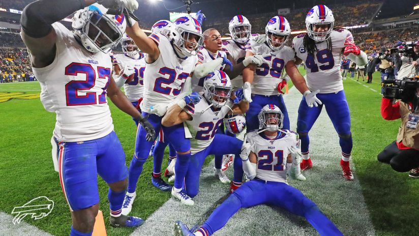

Buffalo God Damn Bills

Needs
- Running Back
- Edge Rusher
- Corner
WHO WE SHOULD DRAFT
- Round 2 - Trvon Diggs - CB Bama
- He's a 6'2 corner that's long as a bitch. Homie has a way with finding the football and isn't scared to make a tackle. He's a edge guy which will keep taron johnson at the slot corner spot. We need corner depth to help Tray Day.
- Round 3 - Zack Moss - HB Utah
- A tough nose runner with some flare. He's a great 1-2 punch with Devin. He has alot of the quickness but is more down hill and will get you 2 yards on 3rd and two. But he's still a weapon in the pass game.
- Round 4 - Derrek Tuszka - DE/OLB NDSU.
- Big strong and fast. If he falls this late as projected it'll be a steal. I think he can play a bit of OLB if needed as well. He has potential but I don't think he's a day one starter by any means part of a rotation at most.
- Round 5 - Some O Lineman I'm not scouting O Lineman
- Round 6 - James Proche - WR, SMU.
- I really really like this guy. He reminds me so much of antonio brown. This WR class is so stacked he shouldn't be a day three guy. He's a playmaker which I think is what the bills need. A guy who can take a drag route and make a play. I think he can return as well he had a ability to make the 1st guy miss
- Round 6 - Some O Lineman I'm not scouting O Lineman